在浩瀚的宇宙中, 有一位創造主. 祂創造了宇宙萬物, 也按照祂自己的形象造人. 在祂的創造中, 蘊藏祂對人滿滿的愛. 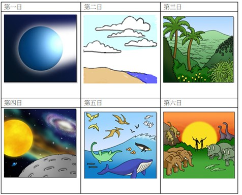
第一天, 祂吩咐有光, 使大地不再黑暗. 第二天, 讓大地出現了空氣; 第三天, 祂創造了植物, 能行光合作用製造氧氣. 第四天, 祂讓星球運行在宇宙之中, 又造了太陽和月亮, 使四季、晝夜分明, 萬物各按時節生長、凋謝等生生不息的生命循環. 第五天, 祂創造天空的飛鳥和海底的生物; 第六天, 祂創造地上的動物. 當一切都準備就緒後, 祂按著祂自己的形象, 用塵土造人, 並將自己的生命氣息吹進人的體內, 使人成為有靈的活人. 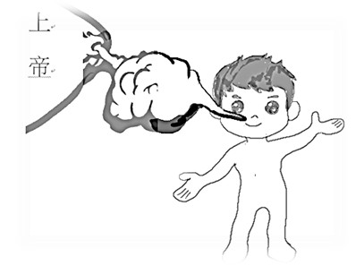然後, 第七天就歇下祂一切創造之工, 並享受與祂所創造的人同在.
神為人預備一切的需要, 將人生命成長所需要的陽光、空氣、水和食物都準備好了, 才創造祂最終要創造的人類始祖, 亞當. 神愛世人的心在此表露無遺, 就如父母愛兒女一樣. 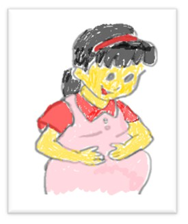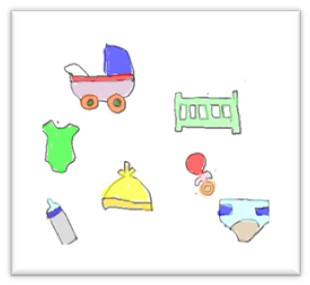當爸爸和媽媽迎接新生兒時, 總是在孩子還沒有出生的時候, 就已經預備好新生兒所需用的一切, 如衣服、尿布等, 在期待中等待孩子的誕生. 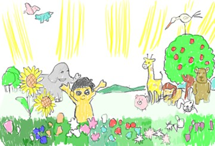當神創造亞當後, 就把祂所創造的世界與人分享, 讓亞當與祂自己一起管理這所創造的世界. 因此, 神將亞當安置在伊甸園, 並讓亞當替動物命名, 好方便亞當來管理.
慢慢的, 亞當開始覺得一個人孤單, 看著動物們都是成雙成對, 就有點失落感. 神也知道人的需要, 於是祂讓亞當沉睡, 並用了他的肋骨造了女人, 夏娃. 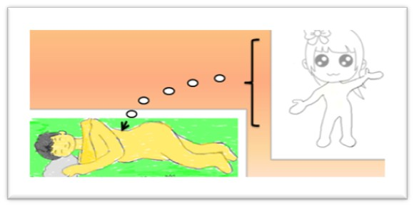神讓亞當和夏娃在伊甸園裡生活, 那是一個無憂無慮的園子, 有各樣的蔬果可以直接享用; 不過, 神對亞當說, 園中各樣的蔬果都可以吃, 唯獨那顆分別善惡的樹不能吃, 因為吃的日子就必死(與神隔絕). 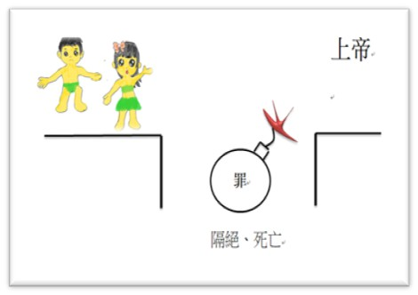
有一天, 夏娃獨自在園中散步, 來到這顆分別善惡樹下, 開始思想為什麼這棵樹上的果實不能吃呢?這時候, 在暗中觀望始祖的蛇發現有機可趁, 就跑到夏娃身邊, 對夏娃說, 神有沒有不准你們吃園中這些樹上可喜悅的果實呢? 夏娃回答蛇說, 不, 這些樹上的果實都可以吃, 唯獨那顆分別善惡樹上的果實, 既不可摸也不可吃, 不然會死. 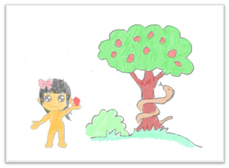蛇又說, 你們不一定會死, 因為神知道, 當你們吃的日子, 你們看事情的視野度就會被打開, 你們就會像神一樣能辨別甚麼是對自己有好處, 甚麼是對自己沒益處.  於是, 夏娃聽了非常的心動, 又覺得果子非常可口, 而且這個試探已經在她心中盤旋了很久, 就摘了分別善惡樹上的果實, 不但自己吃, 也給了亞當吃.
於是, 夏娃聽了非常的心動, 又覺得果子非常可口, 而且這個試探已經在她心中盤旋了很久, 就摘了分別善惡樹上的果實, 不但自己吃, 也給了亞當吃.
亞當和夏娃吃完之後的第一個反應, 不是生命結束, 而是發現自己赤身露體, 覺得非常的羞愧, 於是就用無花果的葉子替自己編織衣服.  後來, 園中突然起了一陣風, 聽到神在呼喚他們, 他們驚覺自己犯了大錯, 便躲在園中的樹木中. 神問亞當, 你在哪裡? 亞當回答神說, 因為我現在赤身露體, 所以聽到祢的聲音便害怕地躲起來. 於是, 神又問亞當, 難道你吃了我吩咐不可吃的分別善惡樹的果實嗎? 亞當便出來, 推託說是祢造的那個女人拿給我吃的. 那女人也害怕, 馬上回答, 是那條蛇引誘我吃的.
後來, 園中突然起了一陣風, 聽到神在呼喚他們, 他們驚覺自己犯了大錯, 便躲在園中的樹木中. 神問亞當, 你在哪裡? 亞當回答神說, 因為我現在赤身露體, 所以聽到祢的聲音便害怕地躲起來. 於是, 神又問亞當, 難道你吃了我吩咐不可吃的分別善惡樹的果實嗎? 亞當便出來, 推託說是祢造的那個女人拿給我吃的. 那女人也害怕, 馬上回答, 是那條蛇引誘我吃的.
於是, 神就咒詛了蛇, 終身吃土並用肚子在地上爬行, 但這也掀起人類與靈界之間糾纏不清的關係. 神說, 蛇(撒但)與女人的後裔互相敵對. 女人的那位後裔要打碎撒但的頭；撒但要咬傷那位後裔的跟隨者. 因著人類始祖違背神的吩咐, 偷吃了分別善惡樹的果子, 結果罪就產生, 人與聖潔的神就隔離了.
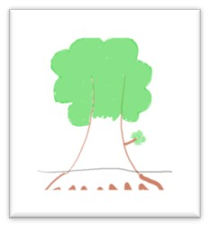 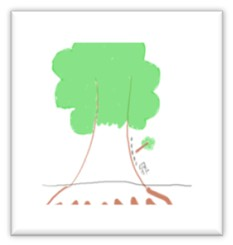神就為亞當和夏娃用動物皮做了衣服給他們穿. 然後, 神就打發他們離開伊甸園, 從此人類必須要汗流滿面, 勞苦耕種才有食物可以吃. 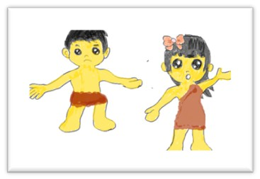